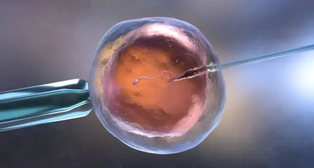
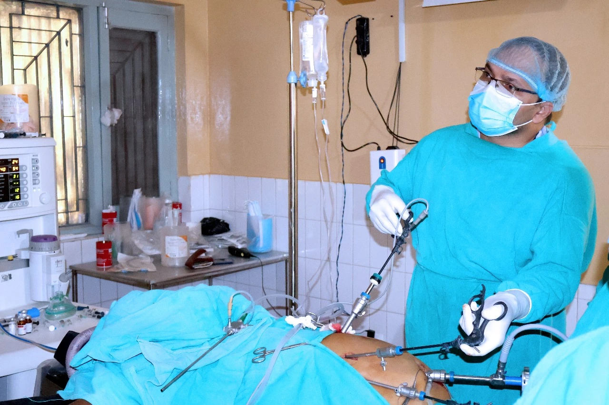

Our 24-Hour Emergency Department is always ready to provide immediate and comprehensive care for any medical emergencies, ensuring timely and efficient treatment around the clock.
Radiology
Digital X-Ray
Our Radiology Department offers advanced imaging services, utilizing the latest technology to provide accurate and detailed diagnostics for optimal patient care.

Infertility
Service
Our Infertility Service provides personalized care and advanced treatment options to support individuals and couples on their journey towards parenthood.

laproscopy
services
Our Laparoscopy Department utilizes minimally invasive surgical techniques to diagnose and treat a wide range of medical conditions with precision and minimal recovery time.
Urology
services
"Our Urology Department harnesses advanced minimally invasive techniques to diagnose and treat a broad spectrum of conditions with precision, ensuring minimal recovery times and optimal patient outcomes."
Gynae/OBS
services
"Our Gynecology Department utilizes cutting-edge minimally invasive techniques for precise diagnosis and treatment across a wide range of conditions, emphasizing reduced recovery times and enhanced patient satisfaction.
Pediatrics
services
"Our Pediatrics Department employs state-of-the-art minimally invasive techniques to diagnose and treat a variety of conditions with precision, focusing on quicker recovery times and superior patient care."
Cardiology
services
"Our Cardiology Department leverages advanced minimally invasive techniques for accurate diagnosis and treatment of cardiovascular conditions, emphasizing faster recovery times and exceptional patient care."
Neuro
surgery
"Our Neurology Department utilizes advanced minimally invasive techniques for precise diagnosis and treatment of neurological conditions, ensuring minimal recovery times and optimized patient care."
Internal
Medicine
"Our Internal Medicine Department employs advanced minimally invasive techniques for accurate diagnosis and comprehensive treatment across various medical conditions, prioritizing swift recovery and patient-centered care."
General
Surgery
"Our General Surgery Department utilizes state-of-the-art minimally invasive techniques for precise diagnosis and effective treatment of a wide range of surgical conditions, emphasizing faster recovery and patient comfort."
Orthology &
Trauma Surgery
"Our Orthopedic and Trauma Surgery Department specializes in advanced minimally invasive techniques for precise diagnosis and effective treatment of orthopedic injuries and trauma, promoting quicker recovery and improved patient outcomes."
O/T
Room
"Our Orthopedic and Trauma Surgery Department specializes in advanced minimally invasive techniques for precise diagnosis and effective treatment of orthopedic injuries and trauma, promoting quicker recovery and improved patient outcomes."
Oral & Maxillofacial
Service's
"Our Oral and Maxillofacial Surgery Department specializes in advanced minimally invasive techniques for precise diagnosis and effective treatment of facial and oral conditions, promoting quicker recovery and improved patient outcomes."